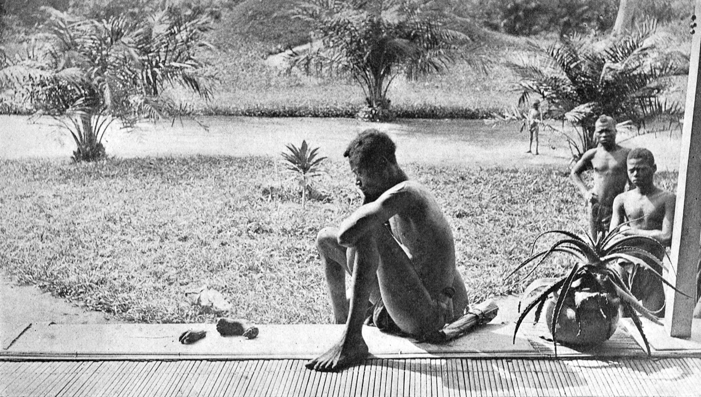
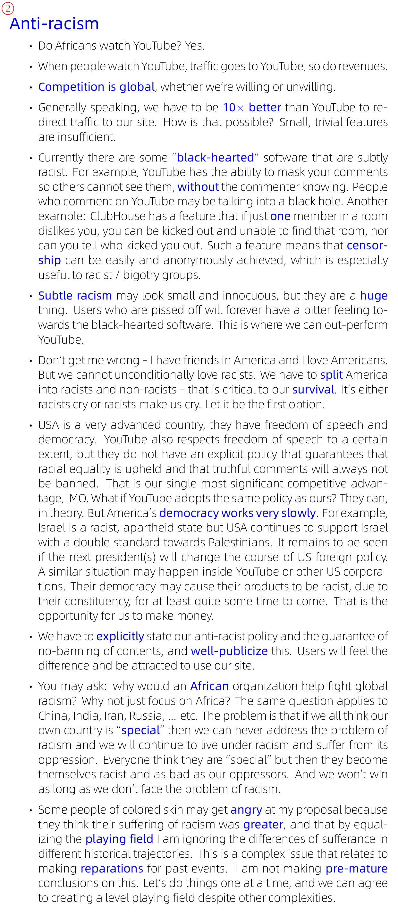
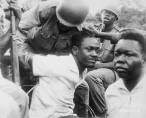
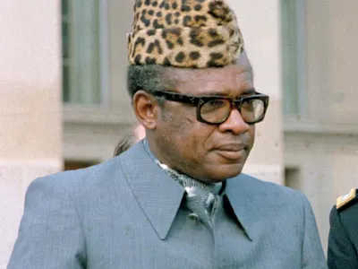

1904 年，刚果是比利时皇帝 King Leopold II 的殖民地。 殖民官员 建立了 quota 制度， 如果杀人或剥削不够会遭鞭打等处分， 下级需要用砍去肢体的方法提供证明， 图为一个奴隶看着他已死的孩子被砍去的手和脚。
这段时期也是 康拉德 的著名小说《Heart of Darkness》的背景。

1960 年，刚果独立，在殖民移交典礼上， Leopold III（也就是上述皇帝的儿子） 赞美 比利时 对刚果所做的「伟大贡献」，当时 第一任总理 Patrice Lumumba 作了一个即席的演说，斥责 比利时的奴隶政策，令来宾震惊。 据说 Leopold 吓到连自己的佩剑也忘了拿走。 我以为他像现代黑人 rap 那样狂爆粗口， 后来我听了一下这段录音，他语气温和，也没有使用特别粗俗的字眼。
2024年，朋友拉我加入一个叫 Future News 的初创新闻社，发起人来自非洲的 Nigeria. 我提出了民主自媒体和保障言论自由的一些建议，当时某个 “dude”（一个似乎是中东裔的较年长的医学博士，他是 board of directors 之一，那是一个未来主义的群组，关注反衰老等技术）他在任何人都未有一句评语之前就很不客气地说 “please mind to use appropriate language”. 然后我的建议没有得到任何回应就不了了之（以下是其中一页）。
其实，即使到了今天， 很多人仍然不敢批评种族歧视， 而且往往也是一些本身是种族歧视的受害者， 用种族歧视来踩低其他人。 我来自香港， 这在香港也是常见的。

Lumumba 在发表演说的三个月后即被推翻， 他逃到联合国维持和平部队的阵营里， 但不获收容，结果被敌人抓获并很仓促地处决了。 死后尸体被酸液融化， 只留下一颗牙齿，2002年 比利时政府将之归还其家属保存。

处决 Lumumba 的命令来自他以前的一个支持者 Joseph Mobutu，他继而成为 刚果的独裁者， 统治了 36年之久。 他搜挖财富、穷奢极侈、在他执政末期 刚果 的经济萎缩到如同一具腐尸。 他的政治路线或可称作「亲美独裁者」， 这本身就是一个很 oxymoron 的词 -- 美国不是推广自由民主的吗？ 其实西方也有黑暗的帝国主义一面； 法国为了制衡英语界在非洲的势力，也选择支持他。
